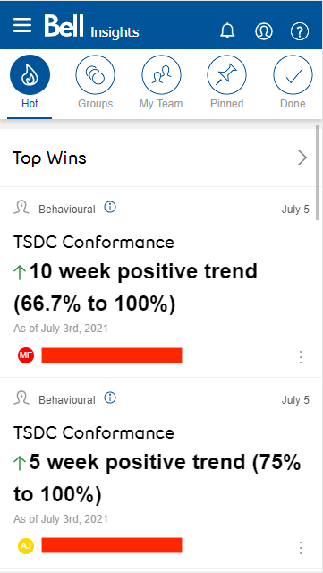

Insights
Product Type: Mobile Web Application
User Base: 10K
Company: Bell Canada

The Product:
Initiated in 2019, the Bell insights app was a supplementary product for managers to identify coaching opportunities and wins for their team.
The Role:
Serving as a product manager, I facilitated the development of the app from a mock view to a functioning beta product over an 8 month period. To achieve this, I worked with the UX Design team, Developers, and Business Intelligence teams that would serve as a coaching product for the various management teams in Bell.
Core Features:
- Customization - users can tailor their data feeds
- Pre-populated coaching logs
- Cross compatibilty with various reporting teams
What I Did:
- Hosted weekly virtuals meetings, clarified scope, implemented changes, prioritized deliverables, got stakeholder acceptance, monitored status for performance and budget. Planned WBS schedule.
- Developed algorithm to rank key Insights based on feedback system and frequency on type of Insights users utilized most.
- Identified and developed key Insights via SQL/SAS to feed platform.
- Worked with various reporting teams to establish data structure to feed their data into mobile platform.
- Implemented Jira and Confluence into engineering and product teams for the Insights app. Assisted on facilitating knowledge transfer.
- Created internal feedback system for users to highlight / report functionality of app.
Metrics:
- Usage of app reduced coaching research time by 90%.
- Time to type up coaching log on discussion reduced to a minute with talk-to-text functionality and pre-populated data.
- Users able to increase coaching discussions monthly by 40% due to app's benefits.
Key Takeaways:
- As a product manager, understood the power of facilitating beta testers and using feedback to better functionality and design of app.
- How to work with UX and Design resources
- How to best manage a remote engineering team when the individuals are hard to reach and lack progress
- As an analyst, learnt how to write optimized queries and schedule jobs